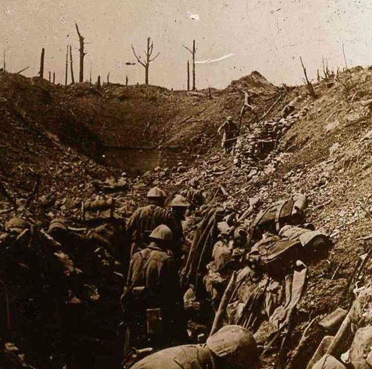

L’hiver 1916-1917 est terriblement froid. Le vin gèle dans les tranchées. Il fait - 25°C. Le ravitaillement arrive mal. De nombreux gelés, surtout aux pieds, sont acheminés vers les hôpitaux de l’arrière. Les régiments réputés les meilleurs sont remis à l’entraînement. Le programme d’armement commence à porter ses fruits et les soldats voient arriver avec satisfaction les nouveaux canons de 155 mm, des camions par centaines, de nouvelles mitrailleuses par centaines, les premiers chars d‘assaut. En ce premier jour de l’an 1917, au 884ème jour de guerre, les Alliés ont, pour la première fois, la supériorité numérique. 190 divisions sont positionnées en France et en Belgique tandis que les Allemands ne disposent plus que de 154 divisions.
Du lundi 1er janvier au dimanche 7 janvier 1917
Sur les fronts belge et français
 Fort de VauxEn Belgique, vive lutte d'artillerie dans le secteur de Nieuport-Bains.
Un coup de main a été exécuté, avec succès, contre les lignes allemandes, au sud-est d'Arras : protégées par un bombardement violent, les troupes britanniques ont pénétré, sur un large front, dans le système de tranchées ennemies et se sont avancées jusqu'aux troisièmes lignes; les défenses allemandes, sur ce point et par ce raid heureux, ont subi d'importants dégâts.
En Champagne, le 2 janvier, après un violent bombardement par engins de tranchées, les Allemands ont attaqué à deux reprises les postes avancés alliés à l'ouest d'Auberive.
Artillerie française dans la Meuse – Janvier 1917Ces deux tentatives ont complètement échoué sous les feux de mitrailleuses françaises et leurs jets de grenades.
Le 4 janvier, duel d'artillerie assez vif au nord et au sud de la Somme, dans la région de Rouvroy et dans celle de Verdun, autour du Mort-Homme et de Bezonvaux.
Sur la rive droite de la Meuse, un fort coup de main tenté par les Allemands contre les tranchées conquises par les troupes françaises à l'est de la ferme des Chambrettes a complètement échoué.
Sur le front russe
Le 1er janvier, les Austro-Allemands ont été repoussés par les Russes près de la frontière de Moldavie, mais ils ont avancé dans la vallée de l'Oïtuz et sur le cours supérieur de la Putna. Le lendemain, dans la région au sud de Pinsk, les Allemands ont bombardé les tranchées russes, ils ont donné plusieurs attaques sans résultat.
Après une violente préparation d'artillerie, les Russes ont pris l'offensive entre la côte et la route Mitau-Biga : franchissant les marais gelés, ils ont pénétré dans une position allemande.
Le 5 janvier, les Russes ont fait 600 prisonniers austro-allemands sur le front roumain, à Botochu, mais ils ont dû reculer vers Braïla devant des forces supérieures en nombre.
Sur le front du Caucase, la tempête de neige continue : l'armée russe néanmoins s'est emparée de la ville de Bidjar ; les Turcs ont pris position des deux côtés de la chaussée.
Les premiers engagements, en avant du Sereth sur le front roumain, n'ont pas été favorables aux Russes.
Les troupes ont évacué Braïla où l'ennemi est entré ; ils ont évacué également la Dobroudja. En plusieurs points, notamment au nord-ouest de Braïla et entre le Buzen et le Romnicu, l'ennemi a atteint le fleuve. C'est sur la rive gauche du Sereth que les Russes espèrent arrêter l'envahisseur.
Du lundi 8 janvier au dimanche 14 janvier 1917
Sur les fronts belge et français
Sur le front occidental de la guerre, le mauvais temps continue à imposer une accalmie aux troupes en présence. Les communiqués ne signalent, en dehors de la canonnade habituelle en Picardie, en Champagne et sur la Meuse, que des coups de main exécutés par nos alliés en Artois et au nord d'Ancre. Les Anglais excellent dans ce genre d'opération : la dernière affaire de Beaumont-Hamel en est une preuve ; avec des moyens limités, ils ont réussi à enlever 1200 mètres de tranchées ennemies bien organisées.
Le 9 janvier, sur la rive droite de la Meuse, lutte d'artillerie assez active au pied des Côtes de Meuse. Les batteries françaises ont exécuté des tirs de destruction sur les organisations allemandes de la Woëvre et du bois des Chevaliers.
Le 272e Régiment d’Infanterie en janvier 1917
Lutte d'artillerie intermittente, le 11 janvier, sur la plus grande partie du front, plus active au nord de la Somme, dans les régions de Bouchavesnes et de Cléry et en Argonne dans le secteur du Four-de-Paris. Le lendemain, sur la rive droite de la Meuse, une attaque des Allemands, dirigée sur une de nos tranchées du bois des Caurières, a été repoussée après un vif combat au cours duquel l'ennemi a subi des pertes sérieuses.
Sur le front russe
Le Bulletin officiel de Pétrograd enregistre une offensive allemande en Courlande, dans le secteur de Riga : l'armée du général russe Roussky, dans la région de Kolncen et au sud du lac Biabit, a arrêté cette offensive; trois régiments allemands furent détruits et un nombreux butin recueilli : 50 mitrailleuses, 30 canons, 500 chevaux, 50000 uniformes, 15 000 fusils, 10 000 bouteilles de cognac.
Le 8 janvier, les Russes font 500 prisonniers allemands en Moldavie.
Le 9 janvier, Le général Trepof, président du Conseil de Russie depuis le 23 novembre 1916, est mis à la retraite ainsi que M. Ignatief, ministre de l'Instruction publique. Le prince Galitzine, sénateur, membre du Conseil de l'empire, remplace le général Trepof. M. Neratof, ministre-adjoint des Affaires étrangères, s'est également retiré pour entrer au Conseil de l'empire.
En Roumanie, la bataille se poursuit acharnée, mais avec plus d'alternatives favorables que précédemment pour les défenseurs : les dépêches des Empires centraux enregistrent l'énergique résistance des Russes sur la ligne principale du Sereth. La marche victorieuse du maréchal allemand Mackensen semble retardée et aucune suite n'est donnée au projet d'offensive allemande en Bessarabie.
Les Russes continuent à progresser dans la région de Riga. On affirme, le 13 janvier, que trois régiments allemands ont été complètement détruits.
Le 14 janvier, les Russes ont repoussé plusieurs tentatives ennemies dans le nord. Le général Radko Dimitrief, qui commande sous les ordres du général Russky, a lancé une proclamation à ses troupes en leur énumérant le butin conquis entre Riga et Mitau, butin qui est considérable.
Du lundi 15 janvier au dimanche 21 janvier 1917
Sur les fronts belge et français
Mont Saint-Eloi janvier 1917Les coups de main se succèdent sur notre front : c'est d'abord du côté anglais, où ils sont plus fréquents, dans la région d'Arras à Loos, là où l'ennemi tient un secteur d'une importance considérable et pour la possession duquel des combats fameux ont été livrés jadis, à Mont-Saint-Eloi, à Souchez, à Givenchy et à N.-D.-de-Lorette ; c'est pour les Français, dans le coude formé par la zone de feu, en Noyonnaîs, particulièrement au sud de Roye et de Lassigny où la canonnade est très violente et les patrouilles très actives.
Le troisième théâtre de ces raids dans les lignes des adversaires est le versant alsacien des Vosges : la presse allemande écrit que le général Foch, le vainqueur de l'Yser, va attaquer dans les vallées de la Thur, de la Doller et enfin à l'est du canal du Rhône au Rhin, dans le but de faire tomber Mulhouse entre nos mains. Or, jusqu'ici, aucune grosse action n'a été entreprise : le bombardement seul est d'une intensité intermittente.
L'opinion s'est émue, à nouveau, cette semaine, lorsqu'elle apprit que le généralissime suisse Wille avait demandé au gouvernement helvétique la mobilisation générale; cependant, la France et l'Allemagne ont donné l'assurance que leurs armées ne pénétreraient pas en Suisse. L'effectif mobilisable au complet est évalué à 150 000 hommes de « l'élite », 70 000 de la « landwehr », 70000 pour le « landsturm armé » et 200 000 des « services auxiliaires ou complémentaires ».
Sur le front russe
Le 15 janvier, les Russes repoussent une offensive allemande dans la région de Riga, au sud du lac Babit, à l'est du village de Kalnzem. Les communiqués signalent, cette semaine, des combats acharnés qu'Allemands et Russes se livrent dans les parages de Smorgon : cette ville est sur le chemin de fer de Vilna à Minsk, à la base d'un plateau où naissent de nombreux cours d'eau ; de là, on commande le croisement des voies ferrées de Molodechno, où se coupent en outre deux lignes principales de l'Empire; au nord de Smorgon sont des lacs qui empêchent l'envahisseur de pousser une pointe plus hardie vers l'est.
Le 18 janvier, au sud d'Augustowo, l'ennemi tient les positions de nos alliés russes sous un feu intense. Il a bombardé sans succès leurs troupes au sud de Samnitsa, sur la Bistrytsa.
Sur le front roumain, les Russes concentrent présentement la plus grande partie de leurs efforts à conserver, avec l'aide des armées roumaines reconstituées, l'ensemble des lignes du Sereth et du Trotus : leur vigoureuse et parfois victorieuse réaction, en vue de sauver la Moldavie orientale qui est d'une réelle valeur stratégique pour le développement de leurs opérations, coïncide avec la promesse faite par le tzar au roi Ferdinand que les armées du grand Empire libéreront entièrement le petit royaume allié.
Devant Galatz (qui est toujours aux mains des Roumains) et en Dobroudja, les Turco-Bulgares n'avancent plus : les eaux du Danube inondent, d'ailleurs, la plaine de la Grande-Valachie.
Du lundi 22 janvier au dimanche 28 janvier 1917
Sur les fronts belge et français
Après une canonnade toujours très vive, les Allemands ont tenté quelques coups de main sur la Somme, dans l'Aisne, Champagne et Alsace : partout l'échec a été complet, sauf dans le secteur de Verdun. Là, grâce à leurs masses d'assaut et à de grands sacrifices, ils avaient réussi à ravir aux Français quelques éléments de tranchées à la côte 304, entre le bois d'Avocourt et le Mort-Homme ; dès le lendemain, un retour offensif de nos soldats rétablissait la ligne française dans son ensemble.
La presse suisse signale des concentrations de troupes allemandes entre Constance et Bâle, sur la frontière de Haute-Alsace, visant Belfort : le haut commandement allemand préparerait une grande opération militaire dans cette région ; il est maintenant sûr que huit divisions ennemies ont été amenées du front roumain sur ce point.
Sur le front russe
Le 22 janvier, tandis que l’artillerie russe a opéré un bombardement prolongé dans la région de Kovel, le tsar a adressé un rescrit au nouveau président du Conseil, prince Galitzine, pour affirmer sa volonté de poursuivre la guerre jusqu'à la victoire décisive et recommander une collaboration bienveillante entre le gouvernement et les assemblées. Il insiste aussi sur la nécessité de remédier à la crise alimentaire.
La bataille se développe en Courlande : les Russes continuent leurs attaques de diversion dans la région au sud de Riga; le théâtre principal des combats est le bassin de l'Aa : sur les deux rives de ce cours d'eau, dans les environs de Kalmcen, nos alliés ont obtenu des résultats; mais des renforts arrivant sans cesse aux troupes qui recevaient le choc, celles-ci regagnèrent le terrain perdu afin d'éviter à Mittau et à Tukkum une réoccupation russe. L'objectif du général russe Dimitrieff semble être, d'ailleurs, de retenir en Courlande des effectifs dont le maréchal allemand Mackensen aurait besoin pour vaincre les défenseurs du Trotus et du Sereth.
Les Russes, sur le front roumain, tiennent toujours les forts du Galatz, malgré une canonnade ininterrompue et la ville est en flammes. Mais le froid intense empêche toute opération de réelle importance.
Partager cette page